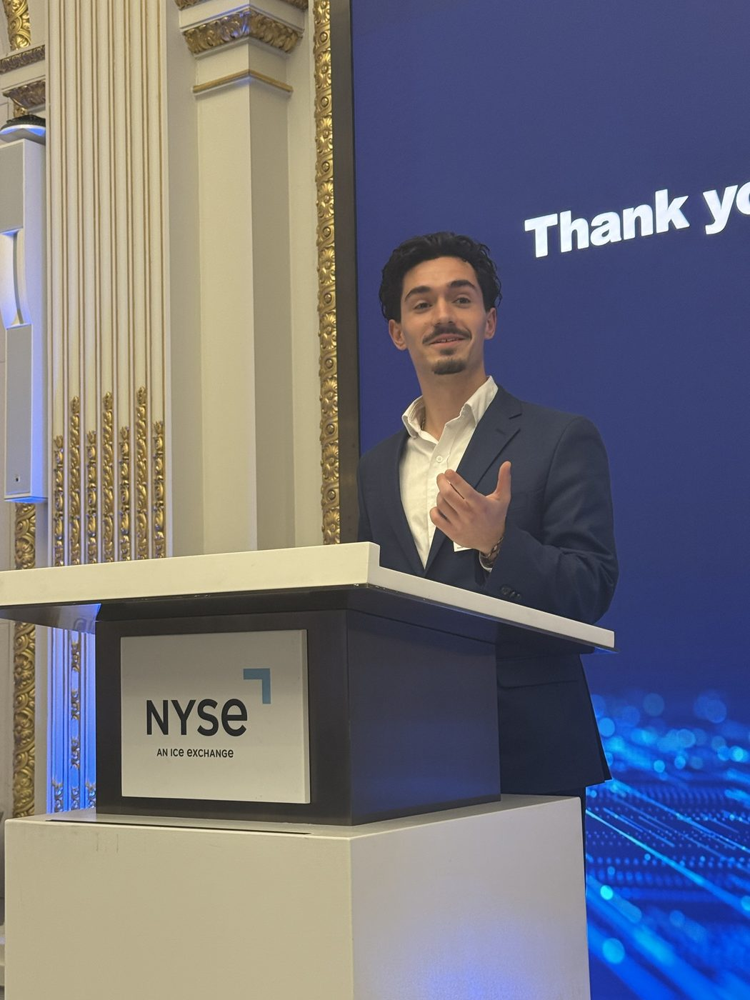

Finsight.
A fintech platform that tracks the primary bond market. I collected the order books.
Collecting order books
Syndicate desks run the book, and none of them has to tell you what is in it. I called 30 plus banks for book sizes from talk to launch, and got the numbers out before the next update. Fifteen to twenty deals a day.
A normal day, hour by hour
Two desks, two different markets
High yield in the spring, where every deal turns on the company. Investment grade over the summer, where much depends on the window.
Transactions that stayed with me
- Alphabet's $25 billion offering. Ten tranches out to 40 years, a book around $115 billion.
- The Paramount Skydance exchange and tender offers. It led to the tender tracker and the Skydance DCF.
- Relative value comps. Screens on tenor, rating and spread to gauge concession.
ICE Fixed Income Forum at the NYSE, October 2026
ICE Fixed Income Forum at the New York Stock Exchange, October 21, 2026.

The podium. 
The panel chairs, after the panel. 
Getting a feel for the room.

The tenor screens
I kept ten daily screens of the lowest spreads and lowest coupons printed in the 3, 5, 7, 10 and 30 year. They covered every investment grade deal back to 2022, by week, month and year. Each row had the issuer, ratings, size, call, final book, coupon, yield and spread. A check sheet held any prints that looked wrong until I had confirmed them.
When a banker asked how a new 5 year compared, the answer was on a single screen. You judge concession by holding one deal up against a lot of others. There is no formula.
The end of day tally
Every afternoon the day's investment grade prints went into one table: issuer, rating, size, tenor, final book, leads, price talk, where it priced, the move from talk to print, and the identifiers. That table is where the morning wire's numbers came from.
Volume against the Street
I tracked issuance volume against the Street's estimates by day, week and month, with deal counts, tranche size, talk to print, final book, attrition, concession and end of week trading. The daily sheet went back years, with holidays, zero days and Fed days marked. It is the table you open when someone says nothing prices in August.
Backfilling the database
The platform's history had gaps. I checked a list of 2019 Latin American deals one by one against what the platform had and returned the missing, incorrect and doubtful entries as a task list. It was slow work, and it is what makes a dataset worth paying for.
What I did on my own time
- I reached out to the syndicate bankers I was collecting books from, at BBVA, Scotiabank and HSBC, to learn how they read demand and set concession. I still speak regularly with three of them.
- I taught myself the Bloomberg API in R and built the first version of the market dashboard, so that I could review the curve, DV01, spreads and new issue comps every morning.
- I flew to New York in July at my own expense to work from the office for a few days and meet the team in person.